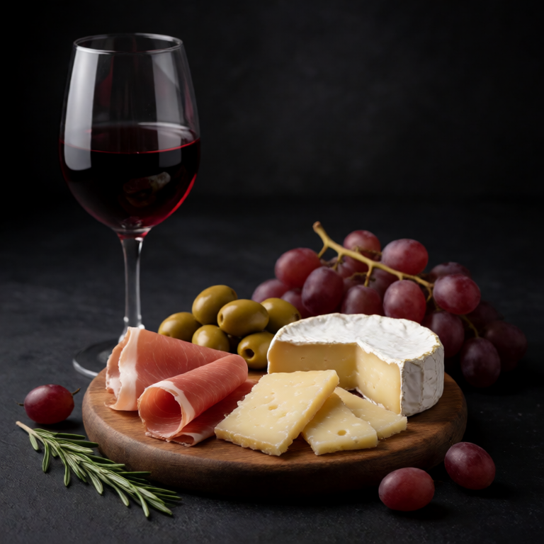

A proper small board built for one, with wine. This is aspirational solo dining.
At a Glance
Prep
10m
Cook
0m
Serves
1
Difficulty
Easy
Ingredients
- prosciutto or coppa 30g
- soppressata or salami 30g
- aged manchego or comte 40g
- soft triple cream brie 40g
- Castelvetrano olives handful
- grapes and fresh figs handful
- marcona almonds 1 tbsp
- crackers or toasted baguette slices handful
- good red or white wine 1 glass
Method
-
Build the board
Place 40g of manchego and 40g of brie at opposite corners of a board. Fold 30g of prosciutto and 30g of salami and fill gaps with olives, fruit, and 1 tbsp of nuts. Add crackers and pour a glass of wine.
-
Eat slowly
Graze. This is a meal. Take your time.
Slop Notes
Never rush a board. The whole point is that you eat slowly and enjoy it.